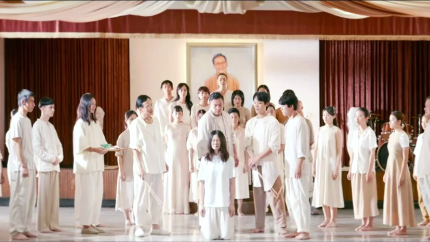
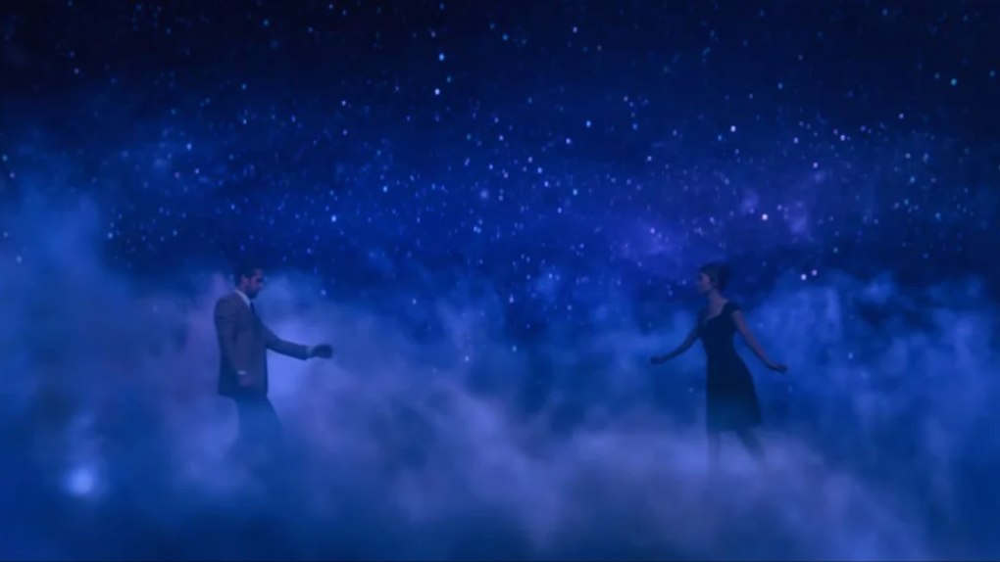
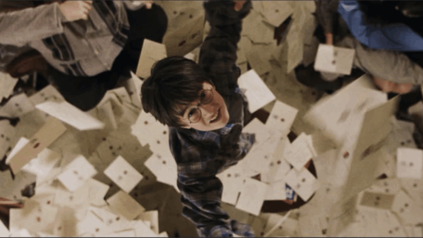
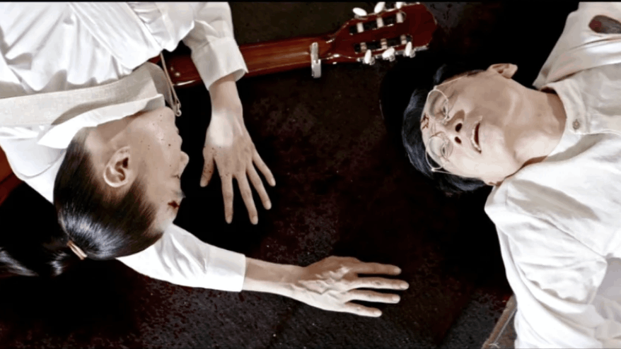
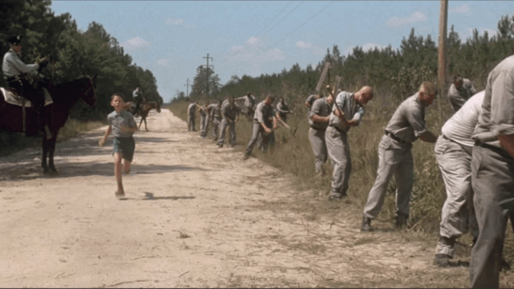
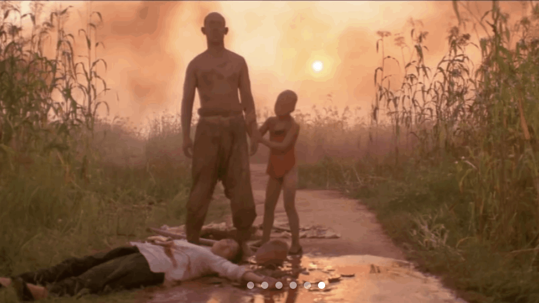
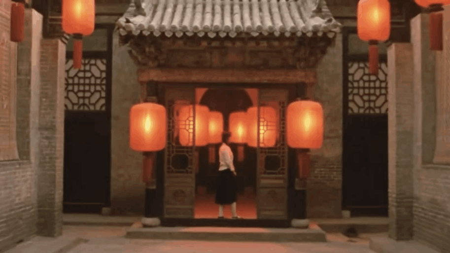
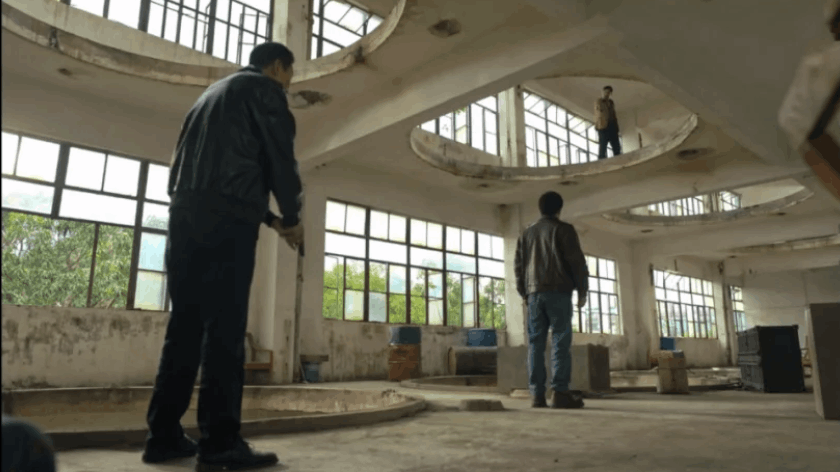
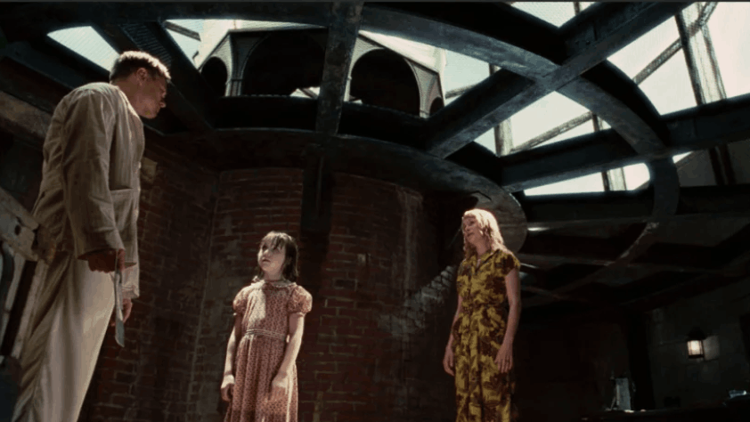
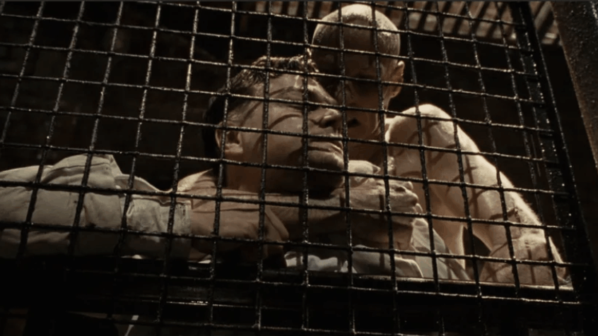

Mobirise以“旅程”为隐喻，构图展示设计师与导游在历史长河中的同步演变、技能共性与未来走向

讲述了通缉犯陈桂林得知自己身患绝症后，为了让自己“死后留名”，决定仿照古人周处的故事，除掉通缉榜上排名靠前的两名罪犯，却在过程中逐渐找回良知、揭露黑幕并最终实现自我救赎的故事。
《爱乐之城》是一部关于梦想与爱情的歌舞片
讲述了演员米娅和爵士钢琴家塞巴斯蒂安在洛杉矶追逐梦想时相爱，但最终因为事业与爱情的冲突而遗憾分开的故事。


影片讲述了孤儿哈利·波特发现自己是魔法师的后代，在收到霍格沃茨魔法学校的录取通知后，他进入了魔法世界，并与朋友们一同发现了伏地魔企图盗取魔法石的阴谋，最终阻止了他。

讲述了通缉犯陈桂林得知自己身患绝症后，为了让自己“死后留名”，决定仿照古人周处的故事，除掉通缉榜上排名靠前的两名罪犯，却在过程中逐渐找回良知、揭露黑幕并最终实现自我救赎的故事。

讲述了智商只有75的阿甘凭借善良、执着和坚持不懈的精神，经历了20世纪下半叶美国重大历史事件，并最终取得成功的故事。
讲述了在20世纪30年代的抗日战争背景下，山东高密的一群中国人，包括男女主人公九儿和余占鳌，在与日军的斗争中，为保卫家园和民族尊严而付出的悲壮故事。

讲述了20世纪初一位女大学生被迫成为富家太太后，在封建家庭中争宠的故事，最终因压迫而走向疯狂。


2021年，临江省京海市开展扫黑除恶常态化的斗争击破大量黑社会案件，“倒查20年”去挖出当地一系列的陈年旧案，由此逐步揭开刑警安欣与当地黑势力高启强及强盛集团在2000年和2006年的往事。
主角泰迪实际上是该岛的精神病患者，他一直在追捕的“67号病人”就是他自己。

电影的整个过程都是一个精心设计的实验。旨在让他直面并接受自己过去因丧失亲人而产生的心理创伤。他之所以会来到岛上调查失踪案，是因为这是精神病医生为他进行“角色扮演”疗法的一部分，目的是让他“醒来”并承认现实。

Mobirise